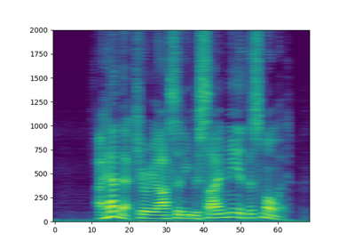

StreamWriter¶
- class torchaudio.io.StreamWriter(dst: Union[str, BinaryIO], format: Optional[str] = None, buffer_size: int = 4096)[source]¶
Encode and write audio/video streams chunk by chunk
- Parameters:
dst (str or file-like object) –
The destination where the encoded data are written. If string-type, it must be a resource indicator that FFmpeg can handle. The supported value depends on the FFmpeg found in the system.
If file-like object, it must support write method with the signature write(data: bytes) -> int.
Please refer to the following for the expected signature and behavior of write method.
format (str or None, optional) –
Override the output format, or specify the output media device. Default:
None(no override nor device output).This argument serves two different use cases.
Override the output format. This is useful when writing raw data or in a format different from the extension.
Specify the output device. This allows to output media streams to hardware devices, such as speaker and video screen.
Note
This option roughly corresponds to
-foption offfmpegcommand. Please refer to the ffmpeg documentations for possible values.https://ffmpeg.org/ffmpeg-formats.html#Muxers
Please use
get_muxers()to list the multiplexers available in the current environment.For device access, the available values vary based on hardware (AV device) and software configuration (ffmpeg build). Please refer to the ffmpeg documentations for possible values.
https://ffmpeg.org/ffmpeg-devices.html#Output-Devices
Please use
get_output_devices()to list the output devices available in the current environment.buffer_size (int) –
The internal buffer size in byte. Used only when dst is a file-like object.
Default: 4096.
- Tutorials using
StreamWriter: - StreamWriter Basic Usage

Methods¶
add_audio_stream¶
- StreamWriter.add_audio_stream(sample_rate: int, num_channels: int, format: str = 'flt', encoder: Optional[str] = None, encoder_option: Optional[Dict[str, str]] = None, encoder_format: Optional[str] = None)[source]¶
Add an output audio stream.
- Parameters:
sample_rate (int) – The sample rate.
num_channels (int) – The number of channels.
format (str, optional) –
Input sample format, which determines the dtype of the input tensor.
"u8": The input tensor must betorch.uint8type."s16": The input tensor must betorch.int16type."s32": The input tensor must betorch.int32type."s64": The input tensor must betorch.int64type."flt": The input tensor must betorch.float32type."dbl": The input tensor must betorch.float64type.
Default:
"flt".encoder (str or None, optional) –
The name of the encoder to be used. When provided, use the specified encoder instead of the default one.
To list the available encoders, please use
get_audio_encoders()for audio, andget_video_encoders()for video.Default:
None.encoder_option (dict or None, optional) –
Options passed to encoder. Mapping from str to str.
To list encoder options for a encoder, you can use
ffmpeg -h encoder=<ENCODER>command.Default:
None.encoder_format (str or None, optional) –
Format used to encode media. When encoder supports multiple formats, passing this argument will override the format used for encoding.
To list supported formats for the encoder, you can use
ffmpeg -h encoder=<ENCODER>command.Default:
None.
add_video_stream¶
- StreamWriter.add_video_stream(frame_rate: float, width: int, height: int, format: str = 'rgb24', encoder: Optional[str] = None, encoder_option: Optional[Dict[str, str]] = None, encoder_format: Optional[str] = None, hw_accel: Optional[str] = None)[source]¶
Add an output video stream.
This method has to be called before open is called.
- Parameters:
frame_rate (float) – Frame rate of the video.
width (int) – Width of the video frame.
height (int) – Height of the video frame.
format (str, optional) –
Input pixel format, which determines the color channel order of the input tensor.
"gray8": One channel, grayscale."rgb24": Three channels in the order of RGB."bgr24": Three channels in the order of BGR."yuv444p": Three channels in the order of YUV.
Default:
"rgb24".In either case, the input tensor has to be
torch.uint8type and the shape must be (frame, channel, height, width).encoder (str or None, optional) –
The name of the encoder to be used. When provided, use the specified encoder instead of the default one.
To list the available encoders, please use
get_audio_encoders()for audio, andget_video_encoders()for video.Default:
None.encoder_option (dict or None, optional) –
Options passed to encoder. Mapping from str to str.
To list encoder options for a encoder, you can use
ffmpeg -h encoder=<ENCODER>command.Default:
None.encoder_format (str or None, optional) –
Format used to encode media. When encoder supports multiple formats, passing this argument will override the format used for encoding.
To list supported formats for the encoder, you can use
ffmpeg -h encoder=<ENCODER>command.Default:
None.hw_accel (str or None, optional) –
Enable hardware acceleration.
When video is encoded on CUDA hardware, for example encoder=”h264_nvenc”, passing CUDA device indicator to hw_accel (i.e. hw_accel=”cuda:0”) will make StreamWriter expect video chunk to be CUDA Tensor. Passing CPU Tensor will result in an error.
If None, the video chunk Tensor has to be CPU Tensor. Default:
None.
close¶
flush¶
open¶
- StreamWriter.open(option: Optional[Dict[str, str]] = None)[source]¶
Open the output file / device and write the header.
- Parameters:
option (dict or None, optional) – Private options for protocol, device and muxer. See example.
- Example - Protocol option
>>> s = StreamWriter(dst="rtmp://localhost:1234/live/app", format="flv") >>> s.add_video_stream(...) >>> # Passing protocol option `listen=1` makes StreamWriter act as RTMP server. >>> with s.open(option={"listen": "1"}) as f: >>> f.write_video_chunk(...)
- Example - Device option
>>> s = StreamWriter("-", format="sdl") >>> s.add_video_stream(..., encoder_format="rgb24") >>> # Open SDL video player with fullscreen >>> with s.open(option={"window_fullscreen": "1"}): >>> f.write_video_chunk(...)
- Example - Muxer option
>>> s = StreamWriter("foo.flac") >>> s.add_audio_stream(...) >>> s.set_metadata({"artist": "torchaudio contributors"}) >>> # FLAC muxer has a private option to not write the header. >>> # The resulting file does not contain the above metadata. >>> with s.open(option={"write_header": "false"}) as f: >>> f.write_audio_chunk(...)
set_metadata¶
write_audio_chunk¶
write_video_chunk¶
- StreamWriter.write_video_chunk(i: int, chunk: Tensor)[source]¶
Write video/image data
- Parameters:
i (int) – Stream index.
chunk (Tensor) – Video/image tensor. Shape: (time, channel, height, width). The
dtypemust betorch.uint8. The shape (height, width and the number of channels) must match what was configured when callingadd_video_stream()